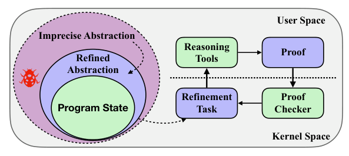
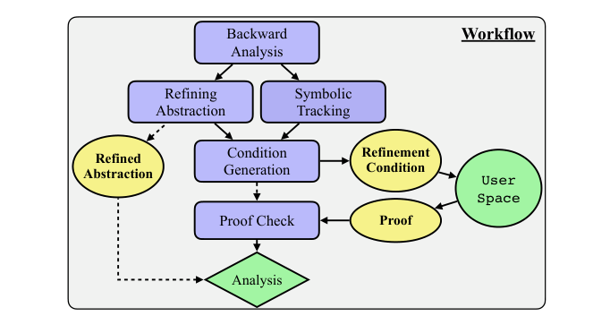
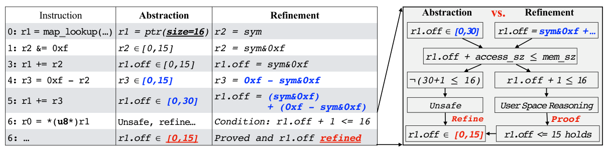
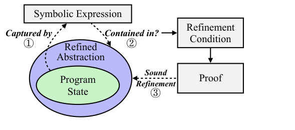
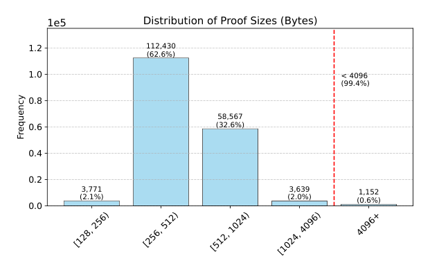
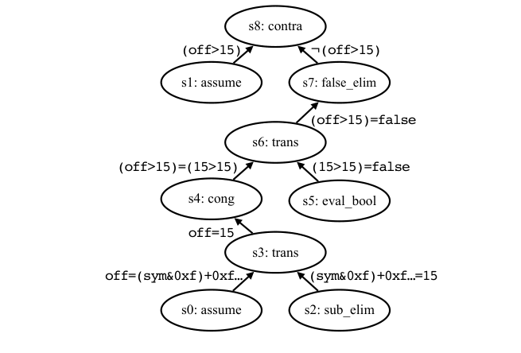
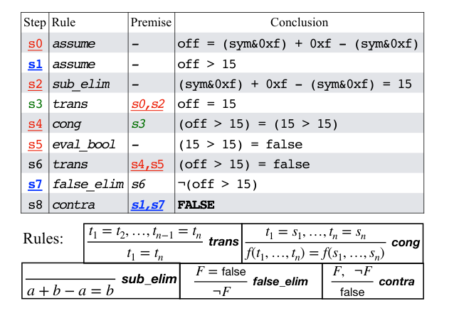

Prove It to the Kernel: Precise Extension Analysis via Proof-Guided Abstraction Refinement
This page was written by an AI model to give a high-level overview of the paper. Please check the paper for detail: ACM Digital Library.
Linux's eBPF subsystem lets untrusted user-space code extend kernel functionality: tracing, security monitoring, packet processing, custom schedulers. Because this code runs inside the kernel, an in-kernel verifier must statically prove each extension is memory safe, terminates within a bound, and only calls approved kernel functions, all without trusting user space at execution time. To stay cheap, the verifier relies on abstract interpretation with inexpensive abstractions: four interval domains (one per register bit-width and signedness) that track value ranges, plus a tristate domain that tracks the known or unknown status of each bit. Both are maintained in linear time, and the verifier follows every feasible path without merging states.
The cheapness of these domains is also their weakness. Every analysis step locally over-approximates: logical operations lose precision in the interval domain, arithmetic operations lose precision in the tristate domain, and neither domain tracks relationships between different registers, for example two registers derived from the same source value, or a sum that is always exactly a fixed constant. Imprecision compounds across instructions with no way to recover it, so provably safe extensions are routinely rejected. This forces real projects such as Tetragon, SCX, and Elastic's eBPF agent into manual workarounds like doubling buffer sizes or writing raw inline assembly just to "appease the verifier." Prior fixes attacked the problem from inside the kernel, either tightening the tristate domain's arithmetic operators or, as in PREVAIL, swapping in a more relational Zone domain that tracks bounded differences between register pairs. Both still face the same tension: more precision means more verifier code, which enlarges the kernel's attack surface and runtime cost, the two things the verifier exists to minimize.
BCF's key idea is to stop trying to make the in-kernel analysis itself smarter, and instead let the verifier delegate the hard reasoning to user space while bridging the two with a formal proof the kernel can check cheaply. When the verifier's abstract interpretation stalls, rather than rejecting outright, it triggers a refinement: it builds an exact symbolic representation of the program state along the relevant execution suffix, computes the tighter abstraction needed to keep going, and expresses the soundness of that tightening as a refinement condition. This condition, not the program itself, is what gets sent to user space.
User space uses an SMT solver (cvc5) to search for a proof that the refinement condition holds; the search can be NP-complete in general, but because eBPF registers are fixed-size machine words the space is finite and the problem is decidable. The proof is a sequence of small, well-defined rule applications (transitivity, congruence, bit-vector arithmetic identities), and a dedicated in-kernel proof checker, supporting 45 primitive rules, replays each step in one linear pass, confirming it matches both the rule definition and the exact condition the verifier stored beforehand. Only after this check succeeds does the verifier adopt the refined abstraction and resume its normal, efficient analysis.
The authors assembled a dataset of 512 real-world eBPF objects (106 distinct source programs from projects such as Cilium, Calico, and BCC, compiled across multiple Clang versions and optimization levels) that are safe but erroneously rejected by the current Linux verifier. With BCF, the verifier automatically accepts 403 of them (78.7%), with an average refinement proof of 541 bytes checked in an average of 48.5 microseconds, while proof checking adds less than 1% to total load-time analysis.

Key takeaways
- The eBPF verifier trades precision for kernel-space simplicity; cheap interval and tristate domains routinely cause false rejections of safe programs.
- BCF's move: keep the verifier simple, delegate hard reasoning to user space, bridge the gap with a machine-checked proof rather than trusting the result directly.
- When the verifier stalls, it builds an exact symbolic program state and derives a refinement condition instead of rejecting the extension.
- An SMT solver (cvc5) searches for a proof in user space; a 45-rule in-kernel checker validates it in linear time before the tightened abstraction is adopted.
- On 512 real-world eBPF objects known to be safe but erroneously rejected, BCF accepts 403 (78.7%), with average proof size 541 bytes and average check time 48.5 microseconds.
From abstract interpretation to proof-checked refinement
What the verifier's abstractions lose, how BCF rebuilds precision on demand, and how the kernel checks a user-space proof without trusting it.
1 · The verifier and its abstractions
The eBPF verifier is the kernel's static analyzer: it must confirm that a submitted extension (1) touches only permitted memory, (2) halts within a bound, and (3) interacts with the kernel only through approved helper functions. It does this with abstract interpretation, approximating the set of possible runtime values of each variable. Concretely, it maintains four interval domains (covering different bit widths and signedness) and a tristate domain that tracks the known or unknown status of individual bits. Unlike classic abstract interpretation, the verifier never merges analysis paths; it follows each feasible path and prunes states that are equivalent under the abstraction. Because both domains update in linear time, the whole analysis stays efficient.
2 · Where false rejections come from
Three related effects erode precision at each analysis step: arithmetic operations lose information in the tristate domain, logical operations lose information in the interval domain, and neither domain preserves exact computations or relationships between registers, so a locally updated over-approximation propagates and compounds. A left shift can turn a precise range of fifteen possible values into an interval twice as wide; a branch that constrains one register often implies a fact about a second register derived from the same source, but the verifier cannot see the connection. These are not corner cases: they recur often enough in compiler output that developers of Tetragon, SCX, and Elastic's eBPF agent resort to manual workarounds, such as allocating twice the needed buffer size or hand-writing inline assembly, to avoid tripping the verifier.
3 · The BCF workflow, end to end

BCF slots a refinement loop into the point where the verifier would otherwise reject:
- Analysis. The verifier runs its ordinary, efficient abstract interpretation until it hits a potential error it cannot resolve with its current abstraction.
- Backward analysis. Instead of inspecting the whole program, the verifier walks backward along the current path to find the shortest suffix that defines the target register and everything it transitively depends on.
- Symbolic tracking. Over that suffix, the verifier recomputes an exact symbolic expression for the relevant registers, with no information loss.
- Refining the abstraction and generating a condition. The verifier derives the tighter bound that would let analysis continue, and formulates a refinement condition asserting that the symbolic expression is fully contained within that tighter bound.
- User space reasoning. The condition is handed to user space, where an SMT solver searches for a proof.
- Kernel proof check. The kernel checks the returned proof step by step; on success it adopts the refined abstraction and resumes analysis at the same instruction, on failure it terminates the load.
4 · Worked example: refining a pointer offset

Consider a program where register r1 points to a 16-byte buffer, and two registers compute adjacent sub-accesses: r2 is masked and shifted to a range of [0, 15], and r3 is set to exactly 0xf minus r2, so the two sub-accesses always total exactly fifteen bytes. The verifier updates r1's offset step by step but cannot preserve the fact that r3 is the complement of r2; it over-approximates r3 to [0, 15] as well, so r1.off = r2 + r3 is reported as [0, 30], twice the true range, and the subsequent one-byte access is rejected as potentially out of bounds.
BCF instead tracks r2 and r3 as symbolic expressions over a single symbolic variable sym: r2 = sym&0xf and r3 = 0xf-(sym&0xf). The symbolic expression for r1.off, (sym&0xf)+(0xf-(sym&0xf)), evaluates to exactly 15 for every value of sym. The refinement condition is simply that this expression is at most 15; once proved, r1.off's range is safely tightened from [0, 30] to [0, 15] and the one-byte access is accepted.
5 · Backward analysis: finding what to track
Backward analysis keeps a working set of registers, initialized to the register that triggered the stall. Walking the current path in reverse:
- If an instruction defines a register already in the set, that register is removed from the set (its value is now known in terms of what came before).
- If an instruction computes a tracked register from another register (for example r1 += r2), the other register is added to the set.
- The walk terminates when the set becomes empty; this is guaranteed because the verifier already requires every register to be initialized before use.
This exploits the locality of real programs: only the instructions that actually feed the target register need exact tracking, not the whole program.
6 · Symbolic tracking: computing an exact state
Starting at the location backward analysis finds, BCF recomputes the suffix with two actions per instruction, similar to classical symbolic execution: it updates each involved register's symbolic expression under the applied operation, and it records the path constraints relevant to the branch that led to the stall. Unlike general symbolic execution, BCF never forks at branches, since it only follows the single suffix that produced the stall, which avoids path explosion. It also reuses the verifier's own partial results: a symbolic variable is kept at 32 bits whenever the verifier's own range analysis has already shown the register stays within 32-bit bounds, and purely constant sub-expressions are folded away rather than tracked symbolically.
7 · Refining the abstraction and the refinement condition

Memory-access safety checks have the form high(r.off) + access_sz ≤ mem_sz and low(r.off) ≥ 0. When the verifier's current bound on r.off fails this test, BCF rearranges it into the tightest bound that would pass: the refined range [0, mem_sz − access_sz]. A refinement to this range is sound only if it is guaranteed to contain every value the register could actually take at runtime, which is exactly what the symbolic expression captures. The refinement condition therefore asserts containment of the symbolic expression within the refined range (together with the relevant path constraint). If no assignment to the symbolic variables violates this, the refinement is sound and a proof can exist; if some assignment does violate it, the refinement is unsound and the extension is correctly rejected.
Because eBPF registers are fixed-size machine words, the refinement condition only ever involves a finite set of bounded symbolic variables, so the underlying satisfiability problem is decidable in principle (by enumeration) and tractable in practice for modern SMT solvers, even though it is NP-complete in general.
8 · Proof generation and kernel-side checking
User space feeds the refinement condition to the cvc5 SMT solver, which either returns a counterexample (the condition is false, the extension is rejected) or a proof. A proof is a topologically ordered list of steps, each a triple of (rule, premises, conclusion); for example, the false_elim rule requires one premise of the form F = false and concludes ¬F. A representative proof for the example above has nine steps, following a proof-by-contradiction structure: it assumes the negation of the refinement condition, derives a concrete value for r1.off using algebraic identities (such as a + b − a = b) and transitivity, then shows that assumption contradicts itself, which establishes the original condition.
| Rule | Premises | Conclusion |
|---|---|---|
| assume | - | asserts a hypothesis (used to set up a contradiction) |
| sub_elim | - | a + b − a = b |
| trans | t₁=t₂, …, tₙ₋₁=tₙ | t₁=tₙ |
| cong | t₁=s₁, …, tₙ=sₙ | f(t₁,…,tₙ) = f(s₁,…,sₙ) |
| eval_bool | - | evaluates a concrete boolean comparison |
| false_elim | F = false | ¬F |
| contra | F, ¬F | false |
The in-kernel checker supports 45 such primitive rules (covering Boolean, equality, and fixed-size bit-vector theories), enough to be complete for proofs the solver produces. It validates a proof in three linear passes: checking that every step's encoding and types match its rule, applying each rule to recompute its conclusion, and finally comparing the last computed conclusion against the exact refinement condition the verifier itself stored before releasing control to user space.
9 · Implementation
BCF touches the verifier, adds an in-kernel proof checker, extends the shared user/kernel interface, and modifies the loader and the cvc5 solver, totaling 7,366 lines of C/C++.
| Component | Language | Lines of code | Location |
|---|---|---|---|
| Verifier | C | 1,663 | Kernel space |
| Proof checker | C | 2,337 | Kernel space |
| uapi (shared interface) | C | 190 | Shared |
| Loader | C | 349 | User space |
| Solver (cvc5 modifications) | C++ | 1,837 | User space |
No new system call is needed: five fields are added to the existing bpf() load command (bcf_fd, bcf_buf, bcf_buf_size, bcf_buf_true_size, bcf_flags), using a shared buffer for the refinement condition and the returned proof, and an anonymous file descriptor to resume the verifier's saved state. Both the condition and the proof use a compact binary encoding: a leading 32-bit header packs operator, length, and type, nested sub-expressions are referenced by relative offset rather than duplicated, and the encoding omits conclusions entirely (since the checker recomputes them), which keeps proofs small. The whole process is automated and push-button: the verifier stalls, the loader translates the condition into the solver's bit-vector format, invokes cvc5, converts the returned proof into BCF's format, and submits it back to resume the verifier; this repeats until the extension is accepted, a condition fails (rejected), or the kernel's one-million-instruction analysis limit is hit.
Two limitations are noted by the authors: symbolic tracking of stack spills is currently complete only for register-sized spills (other sizes are conservatively treated as unbounded, which can weaken a refinement condition so no proof exists, without threatening soundness), and future additions of new solver proof rules require a translation layer in the user-space loader, while the in-kernel checker's fixed rule set stays stable. Measured precision, proof sizes, and overhead are covered in the Evaluation tab.
Evaluation
A dataset of real-world eBPF objects known to be safe but erroneously rejected, and how BCF's refinement, proofs, and checking perform on it.
The authors built a dataset by exploiting compiler diversity: 106 source programs from popular eBPF projects, compiled with Clang-13 through Clang-21 at optimization levels -O1 to -O3, plus nine manually collected real-world rejection reports, yielding 512 unique objects that load successfully under at least one configuration but are rejected under another, hence are provably safe. All runs used a BCF-patched Linux-6.13.4 kernel inside QEMU/KVM virtual machines on a single host.
| What | Value in the paper |
|---|---|
| Host hardware | AMD EPYC 9654 (96 cores, 2 threads/core), 756 GiB memory, host Linux v5.15 |
| Guest | QEMU 6.2.0 with KVM acceleration, minimal Debian image, patched Linux-6.13.4 kernel |
| Workloads | 512 real-world eBPF objects (106 distinct source programs) from Cilium, Calico, BCC, xdp-project, etc., sizes 0.5 to 376.2 KiB, average 118.1 KiB |
| Baselines | Linux in-tree verifier (includes upstreamed tristate-domain improvements); PREVAIL (Zone-domain verifier) |
| Metrics | Acceptance rate, proof size, proof check time, total analysis time, refinement frequency, symbolic track length, refinement condition size |
BCF accepts 403 of 512 previously-rejected, safe programs
What it shows. By construction, every object in the dataset is rejected by the unmodified Linux-6.13.4 verifier (which already includes the upstreamed tristate-domain improvements). With BCF's on-demand refinement, the verifier automatically accepts 403 of these 512 objects (78.7%); among the 106 distinct source programs, 75 are fully accepted across all their compiled variants. PREVAIL, tested separately, loaded fewer than 1% of the dataset due to its Windows-oriented design causing compatibility issues unrelated to precision.
What to take from it. Of the 109 remaining objects, 4 (0.8%) stall at rejection sites BCF has not yet instrumented, 82 (16%) produce refinement conditions that are false given the current implementation's incomplete stack-spill tracking, and 23 (4.5%) hit the kernel's one-million-instruction limit due to loops. The paper argues the first two causes are addressable with more engineering (more instrumented sites, better symbolic tracking), while the loop-related limit is an orthogonal problem left for future work.
Refinements stay local: short symbolic suffixes, compact conditions
What it shows. Across the dataset, the symbolic tracking suffix found by backward analysis ranges from 7 to 373 instructions, averaging 102, which is only 3.4% of the instructions the verifier processes for a program. The resulting refinement conditions average 836 bytes (88 to 2,128 bytes). Overall, fewer than 0.1% of a program's instructions trigger a refinement on average, though the count ranges widely (1 to 16,048 requests per program, averaging 446), driven mainly by loop iteration.
What to take from it. Backward analysis exploits the locality the pointer-offset example in the How It Works tab illustrates: only the instructions feeding the stalled register need exact tracking. This keeps each individual refinement cheap even on large real-world programs, and explains why refinement, despite requiring solver-based reasoning, does not dominate total load time.
Proofs are small, and checking them is fast

What it shows. The average proof is 541 bytes (ranging from 136 to 46,296 bytes). The distribution over individual refinement invocations across the dataset shows 99.4% of proofs under 4,096 bytes, that is, fitting in a single memory page; only 0.6% exceed that size. Average proof check time is 48.5 microseconds, ranging from 31 to 1,845 microseconds.
What to take from it. The heavy skew toward small proofs matches the compactness of the refinement conditions driving them (Result 2): most refinements concern a short, local fact, not a global program property. Even the rare large proofs (tens of kilobytes) check in a comparably small amount of time, since checking is a linear pass regardless of how hard the proof was to find.
A concrete proof tree: nine steps to settle one containment fact

What it shows. For the worked pointer-offset example, the submitted proof decomposes into nine rule applications arranged as a proof-by-contradiction tree: two assume steps set up the negation of the refinement condition, sub_elim and trans steps derive a concrete value for the offset, cong and eval_bool steps evaluate a comparison on that value, and false_elim plus contra close the contradiction, establishing the condition.
What to take from it. Even a fact that is intuitively simple (two complementary bit-masked quantities sum to a constant) requires several chained algebraic and Boolean steps to state formally. The practical payoff is that each step is a small, generic rule, so the in-kernel checker can validate the whole chain without understanding anything about pointers, buffers, or eBPF semantics specifically, only the proof calculus.
Total load-time overhead stays low, dominated by kernel-space analysis
What it shows. Total analysis time per program ranges from 0.7 to 182.0 seconds, averaging 9.0 seconds, split on average into 79.3% kernel-space abstract interpretation and 20.7% user-space SMT reasoning; proof checking itself is less than 1% of total time.
What to take from it. Although proof search is the theoretically hard part (NP-complete in general), it is not the practical bottleneck: BCF only invokes it on demand, and each refinement is scoped to a short local suffix, keeping individual solver calls cheap. This is a one-time, load-time cost, not a runtime cost; the paper notes that because the verifier's analysis is deterministic, repeated loads of the same extension could reuse cached conditions and proofs to cut this further, though that caching is proposed, not evaluated.
Case studies: three distinct imprecision patterns, all fixed without code changes

What it shows. The paper walks through three real false rejections resolved by BCF: a KubeArmor helper call where the verifier could not track that a bounds-checked value remained in range across several intermediate registers; a Cilium WireGuard snippet where the verifier, unable to fully track a signed right-shift followed by a bitwise AND, flagged an actually-unreachable branch as reachable; and a BCC tracer where two registers assigned from the same source value were not recognized as equal, so a bound proven for one was not propagated to the other.
What to take from it. These are three different root causes, lost inter-register dependencies, imprecise bitwise and signed-shift reasoning, and unrecognized register equivalence, all handled by the same mechanism: exact symbolic tracking plus a checked proof, with no changes to the extension's source code or the verifier's core algorithm. This supports the paper's claim that BCF generalizes across imprecision patterns rather than patching one pattern at a time.
FAQ
Q·What is eBPF and what does the verifier actually check?▾
eBPF lets user space load small programs into the Linux kernel for tasks like tracing, security monitoring, packet processing, and custom scheduling. Because this code runs inside the kernel, the in-kernel verifier statically checks, before any execution, that it only accesses permitted memory, terminates within a bound, and calls only approved kernel helper functions.
Q·What does "BCF" stand for?▾
eBPF Certificate Framework, the name of the authors' prototype implementation of proof-guided abstraction refinement in the Linux eBPF verifier.
Q·Why not just give the verifier a more precise abstract domain, like PREVAIL's Zone domain?▾
Precision costs complexity. Richer relational domains such as Octagon (O(n³)) or Polyhedra (O(2ⁿ)) are generally impractical under kernel constraints, and even PREVAIL's more modest Zone domain still enlarges the verifier's code and runtime cost, which increases the kernel's attack surface, exactly what the verifier is meant to minimize. BCF instead keeps the in-kernel domains as they are and only reaches for precise reasoning on demand, in user space.
Q·How can the kernel trust a proof that comes from untrusted user space?▾
It doesn't trust it directly. The kernel first computes and stores the exact refinement condition that must be proved. The submitted proof is then replayed step by step by an in-kernel checker against a fixed set of 45 sound inference rules, confirming each step's premises and conclusion fit the rule, and that the final conclusion matches the stored condition exactly. Any mismatch is rejected.
Q·What exactly is a "refinement condition"?▾
A formal statement that a register's exact symbolic expression, capturing every value it could take at runtime, is fully contained within some tighter range the verifier needs in order to keep analyzing. For example, asserting that (sym&0xf)+(0xf-(sym&0xf)) is at most 15 for every possible value of sym.
Q·Isn't this the same as CEGAR from model checking?▾
Related, but different in where the trust boundary sits. CEGAR refines an abstract model using predicate abstraction entirely within one verification process. BCF deliberately splits the work across a trust boundary: the expensive refinement reasoning happens in untrusted user space, and the kernel never performs that reasoning itself, it only checks a proof.
Q·Could an attacker submit a forged proof to sneak an unsafe program past the verifier?▾
No. The kernel fixes the refinement condition before releasing control to user space, and every proof rule in the checker preserves logical validity, so no sequence of valid rule applications can derive a true conclusion from an unsafe program's necessarily-false safety condition. A forged proof must misapply a rule or attempt to prove an inconsistent statement, and the checker's step-by-step validation catches both.
Q·How is this different from proof-carrying code (PCC)?▾
Classic PCC requires the code producer to prove the entire extension's safety up front, often needing source annotations, and can produce very large proofs (the paper cites up to 31 MiB for tens of instructions in existing PCC-style eBPF efforts). BCF keeps the fast verifier doing the bulk of ordinary analysis and asks for a proof only at the specific points where its abstraction is too coarse, which keeps proofs small (541 bytes on average) and requires no source annotations or manual effort.
Q·What happens if the SMT solver cannot find a proof?▾
If the condition is actually false, the solver returns a counterexample and the extension is correctly rejected as unsafe. If the condition is true but too complex for the solver to resolve quickly, the current implementation also rejects the load (a false rejection, but no worse than today's verifier); the paper suggests solver-backend tuning can mitigate this, and reports it as rare in their dataset.
Q·Does BCF slow down loading of programs the verifier would already accept?▾
No. Refinement only triggers when the ordinary abstract interpretation cannot proceed, and programs the verifier already accepts never reach that point, so their load behavior is unchanged.
Q·Why is finding a proof hard while checking one is easy?▾
Finding a proof means solving a satisfiability-style question, essentially searching over possible register assignments, which is NP-complete in general. Checking a claimed proof only means replaying a fixed sequence of small, pattern-matched rule applications once, in a single linear pass, regardless of how much search went into finding it.
Q·How did the authors find a dataset of "safe but incorrectly rejected" programs, since such cases are rarely reported?▾
They exploited compiler diversity: compiling 106 real source programs with Clang-13 through Clang-21 at optimization levels -O1 to -O3 produces many semantically equivalent bytecode variants. Since each source program is known to load under at least one configuration, any variant rejected under a different configuration is, by construction, a false positive. This produced 503 unique rejected objects, which combined with nine manually collected real-world reports gave the final 512-object dataset.
Q·What are BCF's known limitations?▾
Symbolic tracking of stack spills is incomplete for non-register-sized spills, which are conservatively treated as unbounded and can weaken a refinement condition so no proof exists (this affects precision, not soundness). Very complex conditions can cause the SMT solver to fail or time out. And once a loop's analysis reaches the kernel's one-million-instruction limit, refinement is never triggered at all, since the verifier terminates for a different reason.